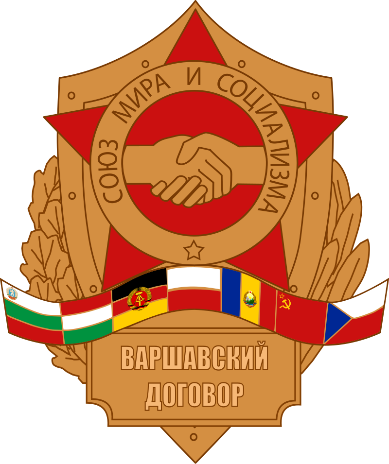

FLAGGEN
WILLKOMMEN IM DDR-FANCLUB
WIR FÜHREN DEN KAMPF!
Die vier Großmächte:
HÖRST DU NICHT AUF DAS,WAS SIE SAGEN,
KOMM STATT MIT UNS!
FDJ - IFA Wartburg
WIR KÄMPFEN FÜR SIE!
UNSER NATIONEL-VOLKSARMEE
Emblem:
UNSERE ZUKÜNFTIGE JUGEND
Emblem:
UNSER GRÜNDERVATER
Emblem:
UND UNSER DEUTSCHE DEMOKRATISCHE REPUBLIK!
Wappen:
PAKTE IN DENEN WIR UNS BEFINDEN
WARSCHAUER-PAKT
Emblem:

COMECON
Emblem:
Die Credits:
Webentwickler: Pars Rüzgar Kuş (Aus der Türkei)
Unser Präsident: Erich Honecker (Aus die DDR)
FDJ-WEBSITE